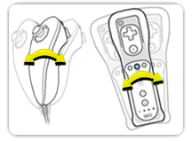

14 |
Controles del
Juego |
 |
Voltear Carta Cuando sea tu turno, debes voltear una carta de la parte superior de tu Baraja de Cartas Cubiertas Propias.
Presiona el Botón A para voltearla.
Presiona la palanca de control en cualquier dirección para voltear la carta.
Si no tienes cartas restantes en tu Baraja de Cartas Cubiertas Propias, no podrás voltear una carta y perderás un turno. Observa con cuidado de todas formas porque aún puedes participar en un duelo y reaccionar ante Cartas Flecha.
Agarra el Tótem Puedes agarrar el Tótem en cualquier momento durante el juego. Agarrar el Tótem en el momento adecuado es una de las formas de deshacerte de tus cartas. Si agarras el Tótem en el momento incorrecto, serás sancionado.
Agita el mando de Wii y oprime el Botón B.
Agita el Nunchuk y oprime el Botón Z.
Agarre en Falso En ocasiones querrás hacer un agarre en falso para engañar a otros jugadores.

Sacude el mando de Wii para realizar el engaño.
Sacude el Nunchuk para hacer el engaño.
|


 |
 |
 |